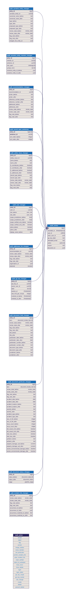

The pipeline reads each accident investigation report and proposes
what it found. CHIRP's reviewers confirm, correct or reject each
proposal and sign the report off. This page explains that workflow
and the record it leaves behind: who may do what, what counts as a
decision, when a report becomes verified, what the pipeline may and
may not do to a reviewed report and what the audit trail holds. The
step-by-step guide to the tool's screens is the reviewer guide that
accompanies it.
Who does what
Every account holds one of four roles. A role is read afresh on every
request, so a change to someone's role or a deactivated account takes
effect at once, for their password sign-in and for any automated key
they hold.
Role
Can
Reader
Read the documents their account allows. No decisions, no edits,
no sign-off, no history. A reader's account can be limited to
particular jurisdictions, or to verified documents only; a
document outside that scope does not exist for them, in searches
or by direct address.
Reviewer
Everything a reader can, plus deciding, correcting and flagging
every item, reading each item's history and signing a document
off.
Analyst
Everything a reviewer can, plus ingesting reports and running or
re-running the pipeline, through the system's interface rather
than the review tool.
Administrator
Everything, plus returning a verified document to extracted and
forcing a re-run or deletion over a reviewed document. Accounts
and invitations are managed by Tandem for now.
What gets reviewed
Review covers the pipeline's inferences, never the text of the
report itself. The sentences are the evidence everything else is read
from, and they are not items. Seven kinds of item are:
Item
What it is
Document fields
Five: title, publication date, publication number, document type
and jurisdiction (the body that published the report).
Accident particulars
Eleven facts the report states about the accident: date,
location, severity, accident type, loss of life, injury count,
whether the vessel sank, total loss, pollution, property damage
and severe environmental damage.
Incident link
The match between the report and the investigators' own record of
the accident (for the UK, the MAIB Data Portal), made by
publication number.
Safety issues
Each hazard the report identifies, kept as the sentences it spans.
Recommendations
Each action the report calls for, kept as the sentences it spans,
with its reference number and addressee as worded.
Entities
Each vessel, person, organisation, place or thing the narrative
names, with every place it is mentioned.
Addressee lists
For each recommendation, the organisations it is directed at,
reviewed as one item separate from the recommendation itself.
The workflow
1
Pick from the queue
The queue lists every report the pipeline has finished with, how
many of its items stand in each state and who is working on it.
Filter to what is flagged, what is still unreviewed or what is
yours.
2
Open it, and claim it
Opening an unclaimed report puts your name on it. A claim is a
note, never a lock: it tells colleagues who is working where, and
lapses after 24 hours without a change.
3
Decide, or correct
Each item is accepted as it stands, corrected or rejected. A
correction keeps the machine's original one step back in the
history. An optional reason can go with any of the three.
4
Flag what you are unsure of
A flag with a note asks for a second pair of eyes. A flagged item
stops the report being signed off until someone resolves it.
5
Sign off
A named reviewer attests that the report is fit to serve to
readers. The sign-off records who, when and how many items stood
in each state.
If needed
Return
An administrator can return a verified report to extracted, with a
note. It leaves every verified-only reader's view at once; the item
decisions are untouched.
The five states
Every item is in exactly one state at any time. An item can be decided
any number of times; the latest decision is its state and every earlier
one is in its history.
State
Meaning
unreviewed
Nobody has looked at it. The pipeline's value stands, unconfirmed.
Every item starts here.
accepted
A reviewer confirmed the pipeline's value as it is.
corrected
A reviewer changed it. The value shown is the reviewer's; the
pipeline's original is in the history. A field a reviewer has
edited is marked as a reviewer edit, which outranks every source
the pipeline reads from, so a later pipeline run keeps it.
rejected
A reviewer said this item should not exist: a recommendation that
is not one, an entity that is noise. It drops out of what readers
of CHIRPdb see, but it is not deleted; a reviewer can still find
it and reverse the decision.
flagged
A reviewer is unsure and wrote a note saying why. The note shows
on the item until it is decided again, and the report cannot be
signed off while any item is flagged.
What a correction can be
A field or particular: a new value, chosen from the
allowed list where one applies (document type, jurisdiction,
severity, accident type) or typed where it does not. Title and
jurisdiction can be changed but never emptied.
A safety issue or recommendation: its own fields
(name, kind, contributory, addressed; reference number, addressee,
action), or the sentences it spans. A record must span at least one
sentence.
An entity: its name or type; merging another entity
into it; moving a mention to another entity or removing one. An
entity left with no mention is removed, and the tool says so before
you confirm.
The incident link: confirmed, or cleared. A cleared
link is remembered as a person's decision, so a later linking run
does not put it back.
An addressee list: an organisation attached from the
shared register, or detached. Other recommendations directed at the
same organisation are untouched.
Two bulk actions exist for the long tail of entities: accept every
unreviewed entity on the page, or on the whole report. Each entity
accepted is its own decision with its own history entry, and an entity
someone else changed in the meantime is skipped and named.
Two people on one item
Every change carries the moment the reviewer last read the item. If
the item has changed since, the change is refused, and the page redraws
the item showing what is stored now, including the other person's
decision. Nothing of the refused change is saved. This is enforced by
the database on every item write, so it holds whether the change comes
from the tool or from an automated client, and a claim is never needed
to make it safe.
Sign-off
Extracted→Verified→Extracted (returned)
Verified is an attestation: a named reviewer says the
report is fit to serve to readers. It is not a sum of item states, for
two reasons. The most entity-dense report in the corpus holds over
three and a half thousand entities, so a rule that every item must be
decided would make verified unreachable for exactly the reports
readers most want; and a rule that signing off silently accepts every
remaining item would put a reviewer's name on thousands of decisions
they never made.
Sign-off is refused, naming what stands in the way, while either holds:
any item on the report is flagged;
any of the seventeen document-level items is undecided: the five
fields, the eleven accident particulars or the incident link. These
are few, high value and what a reader searches on.
Safety issues, recommendations, entities and addressee lists may stay
unreviewed. The sign-off records how many did: for each kind of item,
a count in each state as it stood at that moment, readable afterwards
and unchanged by later review. Signing off again after further
corrections replaces the earlier sign-off's name, time and counts.
Returning a verified report to extracted is an
administrator's act and needs a note. It takes the report out of every
verified-only reader's view at once, which is why it is kept apart from
a reviewer's decisions. The note and the administrator's name stay on
the report until it is signed off again.
The pipeline and your decisions
Every pipeline stage replaces its whole output when it runs, and
deleting a report removes everything under it. Either would discard a
reviewer's work, so the system refuses both for any report holding a
decision (a flag counts) until an administrator forces it with a
reason, which is recorded.
A forced re-run keeps every decided item and
replaces only the unreviewed ones. A decided safety issue or
recommendation stays, matched by the sentences it spans; a decided
entity stays under its human name and state; an edited field keeps
its value; a confirmed or cleared incident link is left alone.
Extraction is never re-run over a decision, forced
or not. Its output is the sentences every decision is anchored to,
so nothing could carry a decision across.
A verified report is never re-run or deleted, forced
or not. The sign-off attests to what is stored. An administrator
returns it to extracted first.
The review tool cannot trigger a re-run or a deletion.
It shows each stage's status read-only; the pipeline is run through
the system's own interface by an analyst or administrator.
The audit trail
The audit trail is a separate part of the database whose only job is to
be true about the past. Where every other table describes what is
currently the case and is free to be corrected, the trail only ever
gains entries. It answers three questions about any item: what did the
machine originally produce, who changed it and when, and what did they
change it to.
One entry per change to one item
Every entry carries:
who: the account that made the change, and, where an
automated key was used, the key's label;
when: stamped by the database, never by the caller;
what: the action (accept, reject, flag, correct,
merge, move a mention, confirm or clear the incident link, sign off,
return, forced re-run, forced delete, create, delete) and the report
the item belongs to;
why: the reason the reviewer gave, if any;
before and after: the item's whole value on each
side, in the live column's own type. A pair that reads the same was
not changed by that write; a created item has no before and a
deleted one no after.
Recommendation 2024/118 in report 9/2024correct · by R. Hartley · Wed 14 Oct 2026, 14:32reason: "The report numbers this 2024/118, not 2024/113."
fieldbeforeafterreference_number2024/1132024/118addresseeThe Maritime and Coastguard AgencyThe Maritime and Coastguard Agencyreview_stateunreviewedcorrected
The pipeline's own writes are not entries: the trail records people.
The first entry on any item therefore carries the machine's original
value on its before side, which is how the tool can show
Machine original at the bottom of every item's history
without storing it anywhere else. A change that touches several items
writes one entry each: a merge of two entities records the entity that
went, the one that survived and every mention that moved.
What else is recorded
Sign-ins, and refused sign-ins. A refused sign-in
keeps the address as it was typed, whether or not an account holds
it.
Automated keys issued and revoked, and
role changes, with the administrator who made them.
Account deletions, keeping the name the account
held, so the trail can still say who made an older change once the
account is gone.
Forced re-runs and deletions, with the
administrator's reason, written before the rows go.
What is not recorded
Bookkeeping that asserts nothing about the corpus stays outside the
trail: who is looking at a report (claims), which pipeline stage ran
when and what it cost and the search fingerprints. A few less central
edits are also unrecorded today: marking a recommendation implemented,
SHIELD code taggings, analysis notes, legislation links and edits to
the shared organisation, legislation and author registers.
Properties of the trail
Never edited, never deleted
No account the application can use holds the right to change or
remove an entry, and the database checks that on every rebuild. The
only way an entry comes to exist is inside the same transaction as
the change it describes, so a change and its record commit together
or not at all. There is no unrecorded path.
It outlives what it describes
Entries are not tied to the live rows by database constraints. A
deleted report's entries are still readable under its identifier; a
deleted account's entries still name it, from the name kept at
deletion.
Readable by reviewers, in context
In the tool, a grey line beneath each item names who last changed it
and when, and History unfolds the item's whole trail, newest
first, read fresh each time so it includes what a colleague did a
moment ago. Readers see none of this; the history needs the reviewer
role or above. The same reads are available to automated clients
with that role.
The audit schema
One table holds what every entry has in common; one table per kind of
item holds that kind's before-and-after values, keyed by the entry.
Scroll to pan, or hold Ctrl/Cmd and scroll to zoom.
100%

In one sentence. The machine proposes, a named person
decides, a named person attests and every one of those acts is written
down with what it changed, in a record that cannot be rewritten.
Tandem Creative Dev · prepared for Zig Zag AI / CHIRP · October
2026
Companion pages: How your incident data is
stored. Technical companions in the project repository:
docs/reference/API.md, docs/reference/DATABASE.md and
the decision records ADR-011 (sign-off), ADR-013 and ADR-016 (the
audit trail) and ADR-015 (re-runs over decisions).